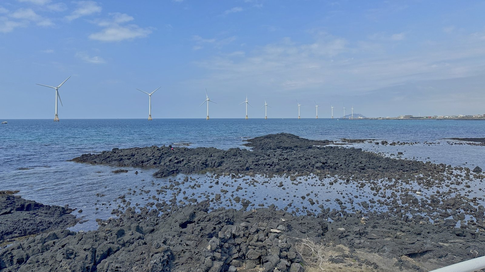
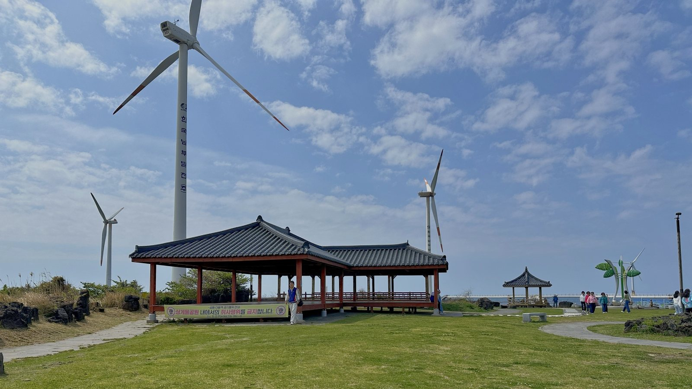
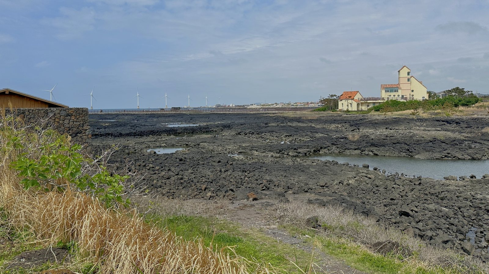
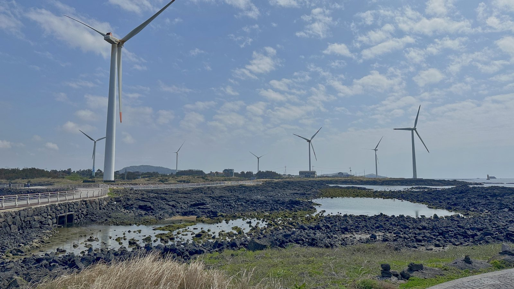
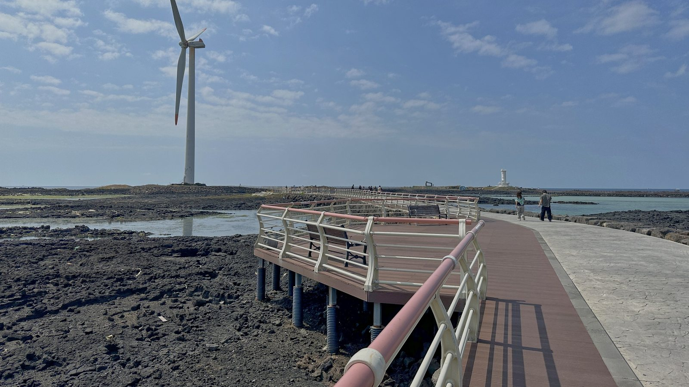
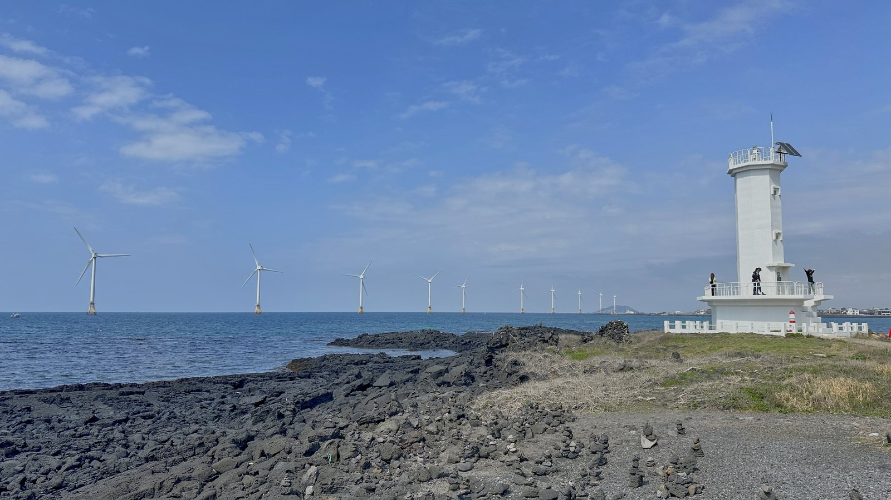
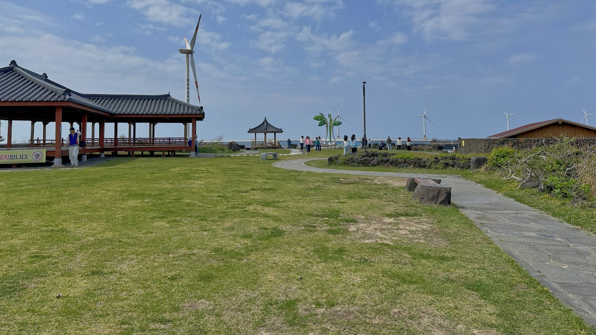
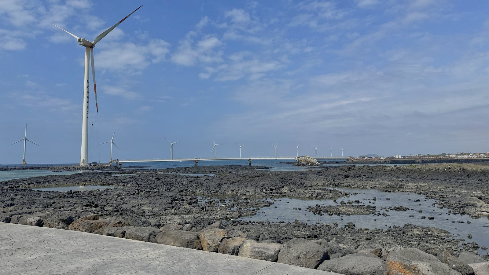
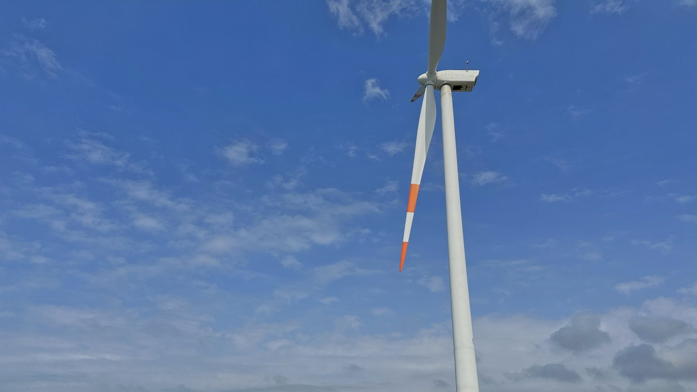
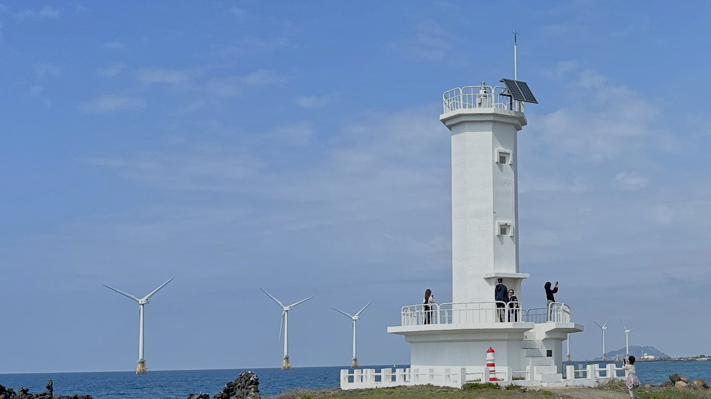

제주시 한경면 신창리, 하얀 풍력발전기가 바다를 따라 늘어선 신창 풍차해안. 그 곁에 싱계물공원이 있습니다.
넓은 잔디광장에 전통 기와 정자가 앉아 있고, 정자 너머로 거대한 날개가 쉼 없이 돌아갑니다.

공원 이름은 바닷가에서 솟는 용천수, 갯물에서 왔습니다. 물이 빠지면 검은 현무암 사이로 물웅덩이가 하늘을 비춥니다.


해안 산책로를 따라가면 바다 위를 가로지르는 해상보도교가 나옵니다. 풍차 소리와 바다의 숨결이 가까이 들립니다.
길 저편, 바다 풍차들을 등지고 하얀 등대가 서 있습니다.


제주 서쪽의 노을 명소로 꼽히는 곳입니다. 공원 입구 휴게소 앞에는 오징어가 줄지어 해풍에 마르는, 어촌의 풍경도 함께합니다.




바다 위 다리를 걸을 때는 바람이 셀 수 있으니 가벼운 겉옷을 챙기세요. 다리 끝 신창등대로 이어지는 구간은 만조 때 물에 잠겨 건널 수 없으니, 물때를 보고 가시면 좋습니다.